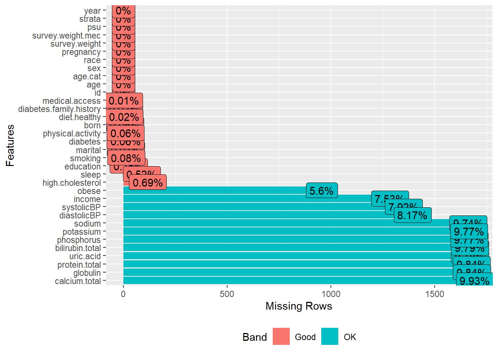

load("data/analytic13recoded.RData")
load("data/analytic15recoded.RData")
load("data/analytic17recoded.RData")26 Merge three cycles
26.1 Analytic dataset
26.1.1 Load 2013-18 datasets
26.1.2 Merge 2013-18 datasets
# adults aged 20 years or more
data.merged0 <- rbind(analytic13, analytic15, analytic17)
dim(data.merged0)
#> [1] 17057 34
data.merged <- droplevels(data.merged0)26.1.3 Check missingness
plot_missing(data.merged)
# profile_missing(data.merged)
dim(data.merged)
#> [1] 17057 34The data contants variables with some missing information.
data.complete <- na.omit(data.merged)
dim(data.complete)
#> [1] 13505 34- Only complete cases retained, and survey features/weights were ignored for simplicity.
- In a realistic analysis, we would consider the missingness pattern before deleting or imputing such information.
26.2 Summary statistics
| No (N=8087) |
Yes (N=5418) |
Overall (N=13505) |
|
|---|---|---|---|
| age.cat | |||
| 20-49 | 4076 (50.4%) | 2649 (48.9%) | 6725 (49.8%) |
| 50-64 | 2048 (25.3%) | 1558 (28.8%) | 3606 (26.7%) |
| 65+ | 1963 (24.3%) | 1211 (22.4%) | 3174 (23.5%) |
| sex | |||
| Male | 4125 (51.0%) | 2352 (43.4%) | 6477 (48.0%) |
| Female | 3962 (49.0%) | 3066 (56.6%) | 7028 (52.0%) |
| education | |||
| Less than high school | 1609 (19.9%) | 1132 (20.9%) | 2741 (20.3%) |
| High school | 4111 (50.8%) | 3237 (59.7%) | 7348 (54.4%) |
| College graduate or above | 2367 (29.3%) | 1049 (19.4%) | 3416 (25.3%) |
| race | |||
| White | 3159 (39.1%) | 2086 (38.5%) | 5245 (38.8%) |
| Black | 1420 (17.6%) | 1338 (24.7%) | 2758 (20.4%) |
| Hispanic | 1780 (22.0%) | 1540 (28.4%) | 3320 (24.6%) |
| Others | 1728 (21.4%) | 454 (8.4%) | 2182 (16.2%) |
| marital | |||
| Never married | 1519 (18.8%) | 916 (16.9%) | 2435 (18.0%) |
| Married/with partner | 4924 (60.9%) | 3227 (59.6%) | 8151 (60.4%) |
| Other | 1644 (20.3%) | 1275 (23.5%) | 2919 (21.6%) |
| income | |||
| less than $20,000 | 1524 (18.8%) | 1091 (20.1%) | 2615 (19.4%) |
| $20,000 to $74,999 | 4058 (50.2%) | 2966 (54.7%) | 7024 (52.0%) |
| $75,000 and Over | 2505 (31.0%) | 1361 (25.1%) | 3866 (28.6%) |
| born | |||
| Born in US | 5247 (64.9%) | 4193 (77.4%) | 9440 (69.9%) |
| Other place | 2840 (35.1%) | 1225 (22.6%) | 4065 (30.1%) |
| year | |||
| Mean (SD) | 8.93 (0.812) | 8.99 (0.809) | 8.95 (0.812) |
| Median [Min, Max] | 9.00 [8.00, 10.0] | 9.00 [8.00, 10.0] | 9.00 [8.00, 10.0] |
| diabetes.family.history | |||
| No | 6739 (83.3%) | 4087 (75.4%) | 10826 (80.2%) |
| Yes | 1348 (16.7%) | 1331 (24.6%) | 2679 (19.8%) |
| smoking | |||
| Never smoker | 4654 (57.5%) | 3074 (56.7%) | 7728 (57.2%) |
| Previous smoker | 1795 (22.2%) | 1435 (26.5%) | 3230 (23.9%) |
| Current smoker | 1638 (20.3%) | 909 (16.8%) | 2547 (18.9%) |
| diet.healthy | |||
| Poor or fair | 1981 (24.5%) | 2261 (41.7%) | 4242 (31.4%) |
| Good | 3346 (41.4%) | 2153 (39.7%) | 5499 (40.7%) |
| Very good or excellent | 2760 (34.1%) | 1004 (18.5%) | 3764 (27.9%) |
| physical.activity | |||
| No | 6445 (79.7%) | 4167 (76.9%) | 10612 (78.6%) |
| Yes | 1642 (20.3%) | 1251 (23.1%) | 2893 (21.4%) |
| medical.access | |||
| No | 1546 (19.1%) | 762 (14.1%) | 2308 (17.1%) |
| Yes | 6541 (80.9%) | 4656 (85.9%) | 11197 (82.9%) |
| sleep | |||
| Mean (SD) | 7.41 (1.53) | 7.32 (1.61) | 7.37 (1.56) |
| Median [Min, Max] | 7.50 [2.00, 14.5] | 7.00 [2.00, 14.0] | 7.50 [2.00, 14.5] |
| systolicBP | |||
| Mean (SD) | 123 (18.8) | 127 (17.3) | 125 (18.4) |
| Median [Min, Max] | 119 [64.7, 229] | 125 [74.0, 234] | 122 [64.7, 234] |
| diastolicBP | |||
| Mean (SD) | 70.0 (11.3) | 72.2 (11.8) | 70.9 (11.6) |
| Median [Min, Max] | 70.0 [8.00, 123] | 72.0 [26.0, 125] | 70.7 [8.00, 125] |
| uric.acid | |||
| Mean (SD) | 5.20 (1.37) | 5.77 (1.49) | 5.43 (1.45) |
| Median [Min, Max] | 5.10 [0.700, 12.3] | 5.70 [1.60, 18.0] | 5.30 [0.700, 18.0] |
| protein.total | |||
| Mean (SD) | 7.14 (0.466) | 7.11 (0.449) | 7.13 (0.459) |
| Median [Min, Max] | 7.10 [4.70, 10.2] | 7.10 [5.20, 9.40] | 7.10 [4.70, 10.2] |
| bilirubin.total | |||
| Mean (SD) | 0.581 (0.302) | 0.511 (0.288) | 0.553 (0.298) |
| Median [Min, Max] | 0.500 [0, 3.30] | 0.500 [0, 7.10] | 0.500 [0, 7.10] |
| phosphorus | |||
| Mean (SD) | 3.72 (0.560) | 3.65 (0.575) | 3.69 (0.567) |
| Median [Min, Max] | 3.70 [1.00, 9.60] | 3.60 [1.70, 8.90] | 3.70 [1.00, 9.60] |
| sodium | |||
| Mean (SD) | 140 (2.47) | 139 (2.52) | 140 (2.49) |
| Median [Min, Max] | 140 [124, 161] | 139 [119, 154] | 140 [119, 161] |
| potassium | |||
| Mean (SD) | 4.00 (0.361) | 4.02 (0.356) | 4.01 (0.359) |
| Median [Min, Max] | 4.00 [2.63, 6.00] | 4.00 [2.60, 6.60] | 4.00 [2.60, 6.60] |
| globulin | |||
| Mean (SD) | 2.87 (0.449) | 3.00 (0.452) | 2.92 (0.455) |
| Median [Min, Max] | 2.80 [1.60, 6.50] | 3.00 [1.40, 5.70] | 2.90 [1.40, 6.50] |
| calcium.total | |||
| Mean (SD) | 9.39 (0.366) | 9.32 (0.370) | 9.36 (0.369) |
| Median [Min, Max] | 9.40 [6.40, 14.8] | 9.30 [6.60, 12.0] | 9.40 [6.40, 14.8] |
| high.cholesterol | |||
| No | 5436 (67.2%) | 3271 (60.4%) | 8707 (64.5%) |
| Yes | 2651 (32.8%) | 2147 (39.6%) | 4798 (35.5%) |
- Investigator specified covariates stratified by the exposure (obesity)
- This Table includes information about participants with and without ICD-10-CM proxy information. Therefore, the sample is is larger than the original analysis.
26.3 Proxy data from ICD10 codes
dat.proxy.long <- rbind(rx2013, rx2015, rx2017)
dat.proxy.long$icd10 <- NULL
# Rename 3 digits ICD-10 codes as icd10
colnames(dat.proxy.long)[names(dat.proxy.long)=="icd10.new"] <- "icd10"We combine all of the ICD-10-CM information form all 3 cycles.
26.4 Save dataset for later use
save(data.merged,
data.complete,
dat.proxy.long,
file = "data/analytic3cycles.RData")